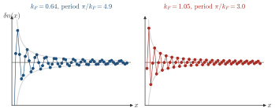

Advanced Quantum Materials 2027 · All lectures · Lecture notes
Session 9. Excitations and Defects in Quantum Materials
9.6b Friedel oscillations in a chain, and the contrast with an insulator
In the first part we derived the Friedel oscillation from the singularity of \(\chi_0(q)\). Let us now look at it in a chain.
For a concrete example, let us take a one-dimensional tight-binding chain with an impurity at site \(0\). The local density of states oscillates around the impurity with wavelength \(\pi/k_F\), which is half of the Fermi wavelength \(\lambda_F=2\pi/k_F\), since the modulation is set by \(2k_F\) and not by \(k_F\). If we raise the chemical potential, \(k_F^{-1}\) becomes shorter and the oscillation becomes faster in the same way. The same phenomenon, with the same physical content, appears in a two-dimensional square lattice. This real-space LDOS modulation around impurities is what an STM measures in practice, and it is quasiparticle interference again, seen this time in real space and not in reciprocal space. The explicit plots of the LDOS as a function of position at two different fillings, for both the 1D and the 2D case, are clearer on the slides than in words. The comparison that shows that the “oscillations get faster as \(k_F\) grows” is a visual one, and it is better seen than read from the formula. As a complementary check, the slides and the notebook also show the insulating case. An impurity placed in a gapped 1D chain gives an LDOS that converges very quickly to its uniform value, instead of oscillating with a slow power-law envelope. This is a first view of the diagnostic that separates gapped and gapless systems, which we will make fully general in Section 9.9 and draw in figure 9.5.

In a gapped chain the LDOS around an impurity converges to its bulk value within a few sites. Why is there no slowly decaying oscillation?
Show the answers
- A. ✗ False
This is false. A metal screens the impurity well, and it still has Friedel oscillations at \(2k_F\). Screening does not remove the tail, and in the gap there are no electrons at the Fermi level to screen.
- B. ✓ True
This is true. A gap makes \(\chi_0(q)\) analytic for all \(q\), so its Fourier transform decays as \(e^{-x/\xi}\). For \(\xi\approx2.5\) sites the response at ten sites is \(e^{-4}\approx0.02\) of its starting value.
- C. ✗ False
This is false. A dimerized chain with hoppings \(t_1\neq t_2\) is gapped and has translational symmetry with a two-site cell. Its LDOS around an impurity still decays exponentially.
Try it. The cell uses mus = [1.95,1.7]. The Fermi level is close to the bottom of the band, so \(k_F\) is measured from the minimum. The ripples have a period of about 14 sites for 1.95 and about 5.7 sites for 1.7, which is \(\pi/k_F\). Replace 1.7 by 1.0 and check that the period becomes 3 sites.
Notebook check-in: session9.ipynb, “Impurity in a 1d metal” (Core), “Impurities in a 2d metal” (Core), and “Impurity in an electronic insulator” (Core)
Place a single impurity in a 1D chain, and then in a 2D square lattice, and look at how the LDOS oscillates as in (9.9). Change the chemical potential and check that the wavelength of the oscillation follows \(\pi/k_F\), as predicted. This is the clearest place in the whole session to see a response formula and a numerical experiment agree digit by digit. The third section repeats the exercise with the chemical potential inside a gap, instead of in a partially filled band. Check that the LDOS now converges to its bulk value within one or two sites, without an oscillating tail that decays slowly. This is the contrast between gapped and gapless systems that Section 9.9 makes fully general.